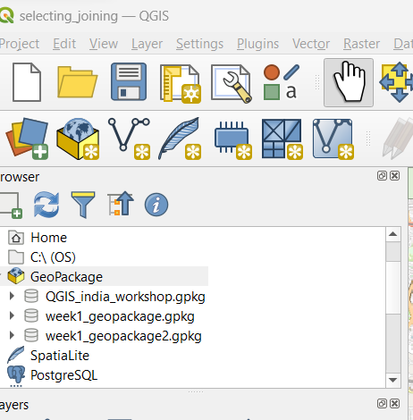
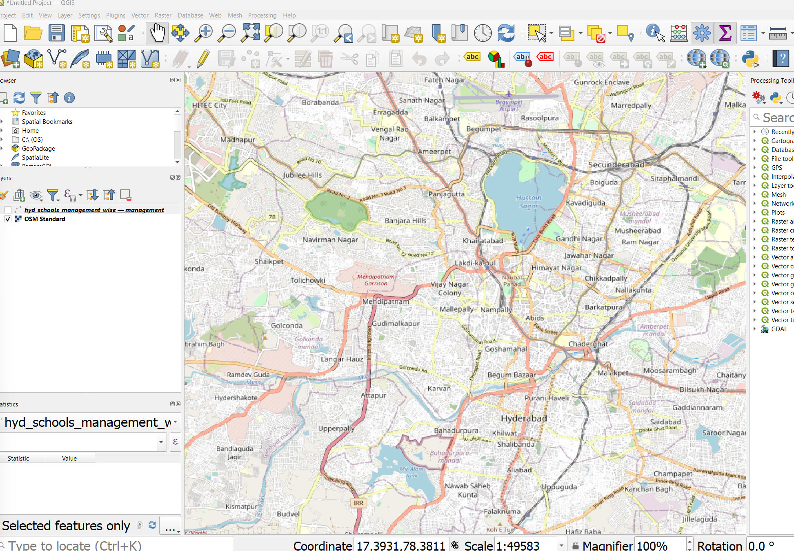
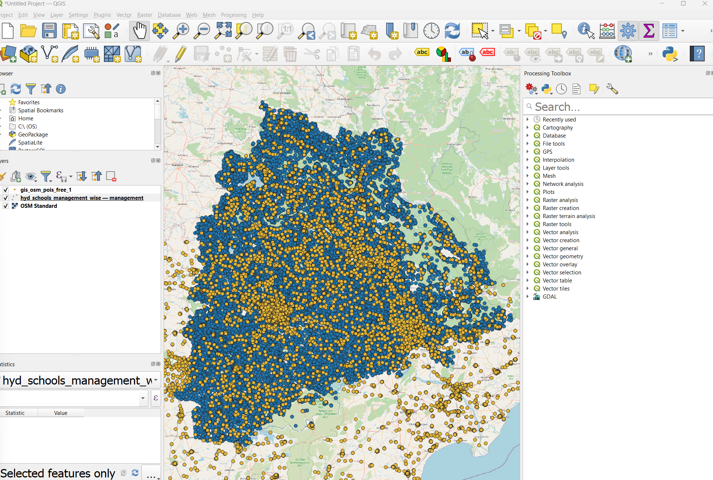
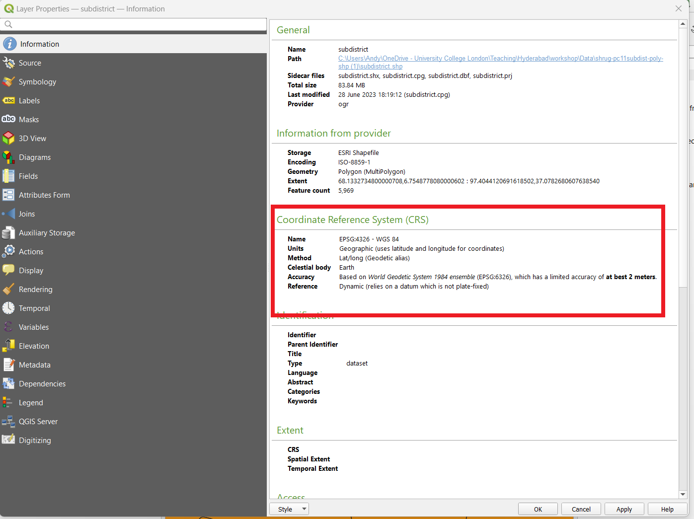
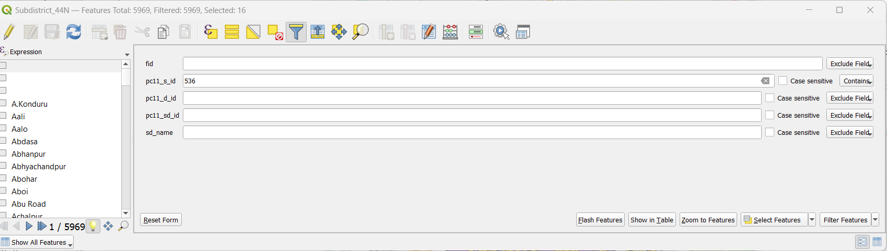
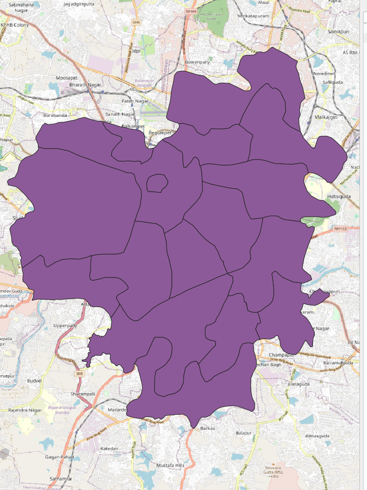
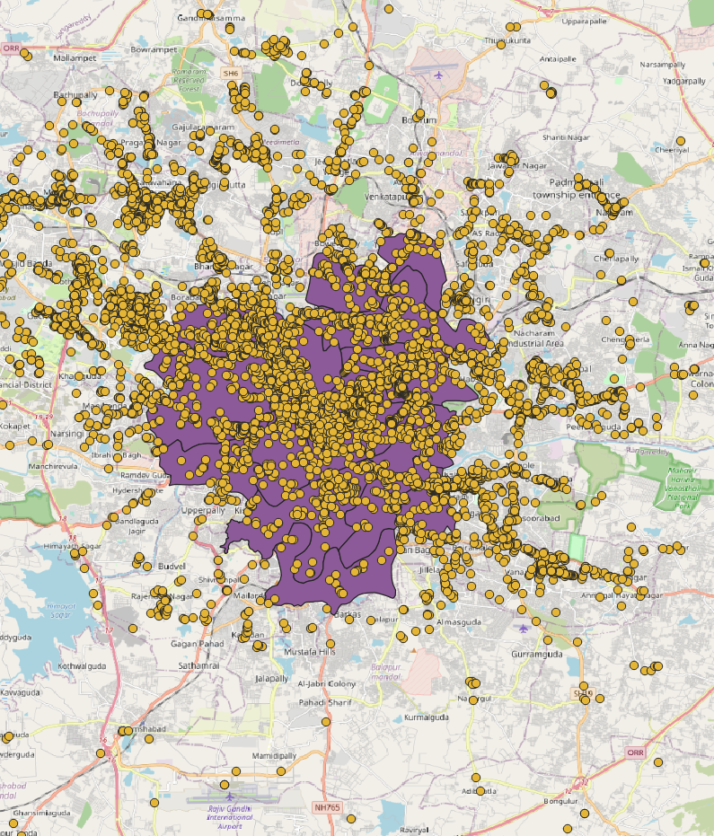
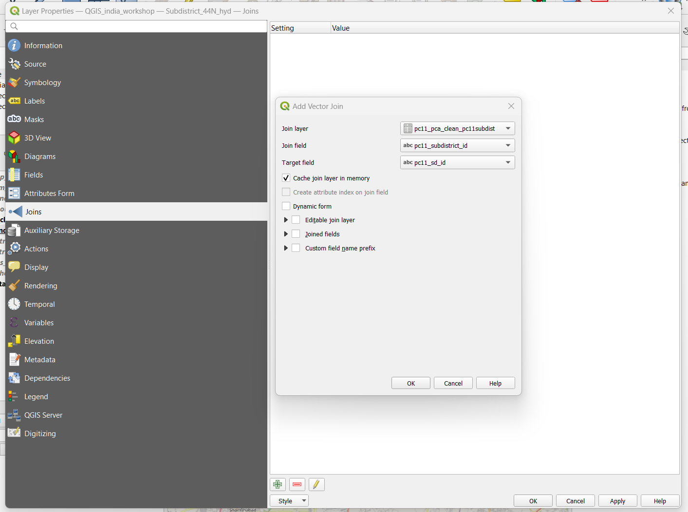

3 QGIS
Quantum Geographical Information Systems (QGIS) is a free GIS. For the purpose of this workshop it can assist is in easily viewing spatial data. This includes point data (e.g. csv / spreadsheet data that has a latitude and longitude column) and spatial data such as shapefiles, geopackages and KMLs.
From the following page you should have installed QGIS. Open the software on your computer.
3.1 Data
The following data is used within this short practical.
- Open Data City schools
- Open Street Map - points of interest
- World pop population (2020)
- Data Devevelopment Lab
- Population Census (9), 2011 Population Census Abstract
- Open Polygons and Spatial Statistics, PC11 Subdistrict Polygons
- Population Census (9), 2011 Population Census Abstract
3.2 Making a project
In QGIS we can make a “project”. The project stores relatively little information. However it will store the file path for each file you load. Say for example we load a shapefile (like we will later), if i create (and save) a project it will know where that file is stored and load it next time i open the project.
To create a project: Project (top left tool bar) > Save as.
3.3 Using QGIS
3.3.1 Moving around the map
In the top tool bar there are a variety of buttons. Two are the most used:
- The white hand: let’s you scroll around the map
- The blue i with an arrow: let’s you query what value the data has.
3.3.2 Saving data
In the following sections we will be select data and exporting it.
There are many ways to export data, but two are often more common:
- Shapefiles - actually several files that make a shapefile
- Geopackage - a container, like a folder that stores all spatial data. The benefit is that it is stored as a signle file meaning if we want to share our data we just share the 1 file!
File management is up to you.
But to make a geopacakge for this work right click on the Geopackage name > create database. Select no geometry here (as the Geopackage will not have any spatial information, but the files places within it will)

3.4 Adding spatial data
You will be presented with a blank map. To assist us in navigating on the top tool bar select Web > Quick Map Services > OSM > OSM standard
This will provide us with a “basemap” it is actually the same as OpenStreetMap but the features are not queryable and it is just an image.

Now, let’s add some data. To add a spatial layer (e.g. a shapefile) you can simply drag and drop it into QGIS. Find any shapefile (.shp) within the data and drag it in. Note you will need to unzip the zipped files. E.g. add the gis_osm_pois_free_1 or any other shapefile from the Open Street Map data
Note that a shapefile is composed of a variety of files! See the explaination of shapefiles
For the purpose of this workshop select the .shp and drag it in.
In a similar theme we can also drag and drop in a KML file. Here, i have add the point of interest layer from the OpenStreetMap data (that i downloaded) and the schools data (KML) from Open Data City. Note that we can see the files in the layer tab on the left. If we uncheck a box the layer is removed from the map.
We can also right click a layer and zoom to layer to see the full extent of it (here, all the points).

3.4.1 Setting a cordiante reference system
There are two coordinate reference systems to be aware of:
- That of each data layer
- That of the “map layer” or the “canvas” in QGIS.
3.4.1.1 CRS of data
Each spatial layer will have a coordinate reference system. If we right click on the point of interest layer from OSM > properties > information. We can see that the CRS is EPSG:4326 - WGS84.

If we do the same for the school data (from Open Data City) we get the same CRS.
This is a geographic CRS and we can see that the units are in degrees - so not very helpful if we want to work out distance!
To transform the CRS to something more use (in metric units) we can use the reproject layer function.
First, make sure the processing toolbox is on the screen. Processing > Toolbox. The processing tool should appear. Search for Reproject layer. A good one for Hyderabad is 32644.
For this example i have transformed:
- The sub districts
- The OSM points
- The Open Data City schools
3.4.1.2 CRS of the map
In the bottom right corner of QGIS you will see an EPSG for the map - mine is 4326. QGIS sets this based on the first dataset loaded.
If a new dataset is loaded that is different you will get a warning. But QGIS reproejcts on the fly this means that any new data will be shown as if it is in the map CRS.
Nevertheless we should always reproject our data before analysis to a local CRS!
3.4.2 Adding csv point data
If we had a csv file with latitude and longitude as points we can add this as a spatial layer through the data source manager.
3.4.3 Adding raster data
For raster data we can drag and drop it again! For example download the worldpop 2020 estiamtes for India
Then drag and drop!
There are many ways we can use / extract data from a raster file. This is beyond the workshop. But we can convert this to vector (points or polygons) and reproject it if needed.
3.5 Filtering
3.5.1 By attributes
Within my sub district data, i know that Hyderabad has a district value of 536. However, my sub district data is for the whole if India.
To select just the sub district polygons i want. Right click on the sub district layer in the layers tab (left of screen) > open attribute table. At the top of the attribute table there will be a funnel icon, click it.
You will then see all the columns of the sub district shapefile and we can enter a filter value…

Enter the value and click select features > close the attribute table.
Go to the sub district layer > right click > zoom to selection. You should see that the villages within Hyderabad have been selected.
We can now export just these features. Right click the sub district layer > export > save selected features as…
The new layer will be added to the map.

3.5.2 By location
If i now overlay my OpenStreetMap points of interest, it will become quite obvious that the points go beyond our study area.

In order to constrain our points to the Hyderabad sub districts we can select the points that intersect it, through a select by location…
Go to Vector (top toolbar) > research tools > select by location. We want to select features from the points layer (here the open street maps points) by comparing them to the boundary of the Hyderabad sub districts.
You can select what operator to use, intersects is typically the default in most spatial applications..
Once this has been run the points within the boundary are selected. However, this has not been saved. If you open the attribute table of the OpenStreetMap points in the top bar of the attribute table it will state selected: 3488. To save our selected data we again need to right click > export > save selected features as
3.6 Joining
Whilst we have completed some spatial operations we have yet to join our census data to our spatial data.
Here, i have downloaded the 2011 Population Census Abstract data from the Development Data Lab. This downloads as the folder shurg-td11-csv. On exploring the data (in excel) i see that it contains a sub district ID column.
Drag in the csv file from the census to QGIS layers
Right click on our Hyderabad sub districts layer > properties.
On the properties window select joins (in the left column).
Select the join layer as the csv - this is the layer to be joined to our spatial data
Select the join field as the sub district ID field from the csv
Select the target field as the sub district ID field from our spatial data:

Open the attribute table of our Hyderabad sub districts and you should see that all the census columns are present.
However the join is not permanent. To keep this data you must export the file like we have done before!
3.7 Review
This has been a brief introduction to QGIS.
Consider the following:
- What is a GIS
- How can we filter our data based on attrbiutes or location
- How can we join non spatial data to spatial data